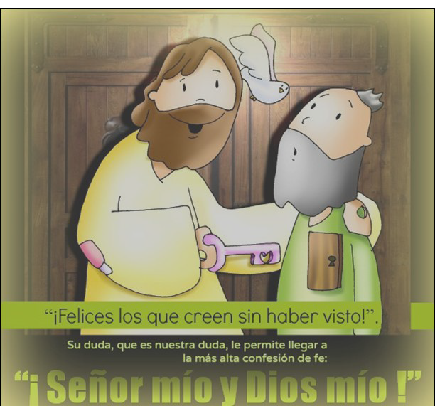

Domingo VII de Pascua - 29 de Mayo de 2022
Como el Padre me ha enviado, os envío yo; recibid el Espíritu Santo
Con la solemnidad de Pentecostés llega a su término la cincuentena Pascual. Con el envío del Espíritu Santo llega a plenitud el Misterio Pascual.
La de hoy, como en el caso de la Ascensión, no es una celebración autónoma del resto de la Pascua sino su colofón. El objeto de la celebración es un acontecimiento salvífico, una obra de Dios: el envío del Espíritu Santo.
Hoy no hay que mirar sólo a aquel momento inicial que se nos relata en los Hechos de los Apóstoles, cuando los discípulos experimentaron, con una fuerza nunca sentida antes, la presencia del Espíritu de Dios. Porque el amor y la salvación de Dios son para todos. Las lenguas de fuego y el viento impetuoso de los que habla la primera lectura no son más que un símbolo para expresar la fuerza del Espíritu de Dios que llega hasta el corazón de la persona humana y es capaz de transformarla.
Cuando se abren las puertas del corazón al Espíritu ya nada es igual. Todo se ve desde otra perspectiva, la del amor y la misericordia de Dios. Nuestra historia personal se transforma en el fuego del Espíritu que se manifiesta para que seamos capaces de vivir como personas nuevas, en apertura y cercanía a Dios y a los demás. Este Don que recibimos conlleva hacer que crezcan los «talentos» para que en la entrega podamos descubrir a Jesús. Hoy es día para dar gracias a Dios por el don de su Espíritu y porque nos llama a la santidad.
Al cumplirse el día de Pentecostés, estaban todos juntos en el mismo lugar. De repente, se produjo desde el cielo un estruendo, como de viento que soplaba fuertemente, y llenó toda la casa donde se encontraban sentados. Vieron aparecer unas lenguas, como llamaradas, que se dividían, posándose encima de cada uno de ellos. Se llenaron todos de Espíritu Santo y empezaron a hablar en otras lenguas, según el Espíritu les concedía manifestarse. Residían entonces en Jerusalén judíos devotos venidos de todos los pueblos que hay bajo el cielo. Al oírse este ruido, acudió la multitud y quedaron desconcertados, porque cada uno los oía hablar en su propia lengua. Estaban todos estupefactos y admirados, diciendo:
‐¿No son galileos todos esos que están hablando? Entonces, ¿cómo es que cada uno de nosotros los oímos hablar en nuestra lengua nativa? Entre nosotros hay partos, medos, elamitas y habitantes de Mesopotamia, de Judea y Capadocia, del Ponto y Asia, de Frigia y Panfilia, de Egipto y de la zona de Libia que limita con Cirene; hay ciudadanos romanos forasteros, tanto judíos como prosélitos; también hay cretenses y árabes; y cada uno los oímos hablar de las grandezas de Dios en nuestra propia lengua.
Palabra de Dios
Envía tu Espíritu, Señor, y repuebla la faz de la tierra
Hermanos: Nadie puede decir: «Jesús es Señor», sino por el Espíritu Santo. Y hay diversidad de carismas, pero un mismo Espíritu; hay diversidad de ministerios, pero un mismo Señor; y hay diversidad de actuaciones, pero un mismo Dios que obra todo en todos. Pero a cada cual se le otorga la manifestación del Espíritu para el bien común. Pues, lo mismo que el cuerpo es uno y tiene muchos miembros, y todos los miembros del cuerpo, a pesar de ser muchos, son un solo cuerpo, así es también Cristo. Pues todos nosotros, judíos y griegos, esclavos y libres, hemos sido bautizados en un mismo Espíritu, para formar un solo cuerpo. Y todos hemos bebido de un solo Espíritu.
Palabra de Dios
Al anochecer de aquel día, el primero de la semana, estaban los discípulos en una casa, con las puertas cerradas por miedo a los judíos. Y en esto entró Jesús, se puso en medio y les dijo: «Paz a vosotros». Y, diciendo esto, les enseñó las manos y el costado. Y los discípulos se llenaron de alegría al ver al Señor. Jesús repitió: «Paz a vosotros. Como el Padre me ha enviado, así también os envío yo». Y, dicho esto, sopló sobre ellos y les dijo: «Recibid el Espíritu Santo; a quienes les perdonéis los pecados, les quedan perdonados; a quienes se los retengáis, les quedan retenidos».
Palabra del Señor
Ven, Espíritu divino,
manda tu luz desde el cielo.
Padre amoroso del pobre;
don, en tus dones espléndido;
luz que penetra las almas;
fuente del mayor consuelo.
Ven, dulce huésped del alma,
descanso de nuestro esfuerzo,
tregua en el duro trabajo,
brisa en las horas de fuego,
gozo que enjuga las lágrimas
y reconforta en los duelos.
Entra hasta el fondo del alma,
divina luz, y enriquécenos.
Mira el vacío del hombre,
si tú le faltas por dentro;
mira el poder del pecado,
cuando no envías tu aliento.
Riega la tierra en sequia,
sana el corazón enfermo,
lava las manchas
infunde calor de vida en el hielo,
doma el espíritu indómito,
guía al que tuerce el sendero.
Reparte tus siete dones,
según la fe de tus siervos;
por tu bondad y tu gracia,
dale al esfuerzo su mérito;
salva al que busca salvarse
y danos tu gozo eterno.
TODO ESO LO ERES TU.
La luz que se impone a la oscuridad.
La certeza que vence a las dudas.
La alegría que salta sobre la tristeza.
TODO ESO LO ERES TU.
En el desconsuelo, eres un abrazo.
En el llanto, eres pañuelo abierto.
En la desilusión, eres aliento.
TODO ESO LO ERES TU.
Cuando caigo, me levantas.
Si me desanimo, me aconsejas.
Si me creo único, me das la humildad.
TODO ESO LO ERES TU
Frente a la cobardía, me ofreces valentía.
Ante la adversidad, me aportas soluciones.
En la incomodidad, me señalas la paciencia.
TODO ESO LO ERES TU.
Eso, y mucho más, Espíritu Santo.
Eso, y mucho más, voz de Dios.
Eso, y mucho más, brisa de la tarde.
Eso, y mucho más, soplo del cielo. Amén.
Domingo VII de Pascua - 29 de Mayo de 2022
La ascensión de Jesús a los cielos es adelanto de nuestra propia elevación. El Resucitado se lleva consigo la humanidad que asumiera en el seno de María. La Pascua de Jesucristo es la puerta que se abre de par en par para que la humanidad, atraída por el Señor en su Ascensión, cruce los umbrales de la muerte para adentrarse en la eternidad de Dios. Cristo fue elevado para que compartiéramos su divinidad. Donde nos ha precedido Él llegaremos también nosotros.
El que está a la diestra del Padre no se ha desentendido del mundo ni de nosotros. El Señor no está ausente, con la Ascensión se pone fin a la presencia corporal de Jesucristo entre los hombre, para hacerse presente de otra manera.
ALEGRÍA: Es el sentimiento que ha de prevalecer entre nosotros, discípulos que durante este tiempo de Pascua celebramos la Pascua del Señor. Es el sentimiento que ha de guiar a la Iglesia a lo largo de la historia, mientras espera la vuelta del Señor, pues volverá "como le habéis visto marcharse".
Alegría por la victoria del Señor, por la fuerza de la vida, por la fortaleza del amor, por la presencia permanente del Señor, que está con nosotros hasta el fin, por nuestra participación en la eternidad que preguntamos ya en la Eucaristía. Mientras esperamos la gloriosa venida del Señor, contagiamos esa alegría, ese gozo pascual, auxiliados por el Espíritu que se nos ha dado en el bautismo.
En mi primer libro, querido Teófilo, escribí de todo lo que Jesús fue haciendo y enseñando hasta el día en que dio instrucciones a los apóstoles, que había escogido, movido por el Espíritu Santo, y ascendió al cielo. Se les presentó después de su pasión, dándoles numerosas pruebas de que estaba vivo, y, apareciéndoseles durante cuarenta días, les habló del reino de Dios.
Una vez que comían juntos, les recomendó:<<No os alejéis de Jerusalén; aguardad que se cumpla la promesa de mi Padre, de la que yo os he hablado. Juan bautizó con agua, dentro de pocos días vosotros seréis bautizados con Espíritu Santo.>>
Ellos lo rodearon preguntándole: << Señor, ¿es ahora cuando vas a restaurarel reino de Israel?>>
Jesús contestó: <<No os toca a vosotros conocer los tiempos y las fechas que el Padre ha establecido con su autoridad. Cuando el Espíritu Santo descienda sobre vosotros, recibiréis fuerza para ser mis testigos en Jerusalén, en toda Judea, en Samaria y hasta los confines del mundo.>> Dicho esto, lo vieron levantarse, hasta que una nube se lo quitó de la vista.
Mientras miraban fijos al cielo, viéndolo irse, se les presentaron dos hombres vestidos de blanco, que les dijeron: <<Galileos, ¿qué hacéis ahí plantados mirando al cielo? El mismo Jesús que os ha dejado para subir al cielo volverá como le habéis visto marcharse.>>
Dios asciende entre aclamaciones; el Señor, al son de trompetas
Que el Dios de nuestro Señor Jesucristo, el Padre de la gloria, os dé espíritu de sabiduría y revelación para conocerlo. Ilumine los ojos de vuestro corazón, para que comprendáis cuál es la esperanza a la que os llama, cuál la riqueza de gloria que da en herencia a los santos, y cuál la extraordinaria grandeza de su poder para nosotros, los que creemos, según la eficacia de su fuerza poderosa, que desplegó en Cristo, resucitándolo de entre los muertos y sentándolo a su derecha en el cielo, por encima de todo principado, potestad, fuerza y dominación, y por encima de todo nombre conocido, no sólo en este mundo, sino en el futuro. Y todo lo puso bajo sus pies, y lo dio a la Iglesia como cabeza, sobre todo. Ella es su cuerpo, plenitud del que lo acaba todo en todos.
En aquel tiempo, dijo Jesús a sus discípulos: <<Así estaba escrito: el Mesías padecerá, resucitará de entre los muertos al tercer día y en su nombre se predicará la conversión y el perdón de los pecados a todos los pueblos, comenzando por Jerusalén. Vosotros sois testigos de esto. Yo os enviaré lo que mi Padre ha prometido; vosotros quedaos en la ciudad, hasta que Palabra de Dios os revistáis de la fuerza de lo alto.>> Después los sacó hacia Betania y, levantando las manos, los bendijo. Y mientras los bendecía se separó de ellos, subiendo hacia el cielo. Ellos se postraron ante él y se volvieron a Jerusalén con gran alegría; y estaban siempre en el templo bendiciendo a Dios.
Vivimos tiempos convulsos para la experiencia religiosa: cuestionada y puesta en evidencia; hasta su carácter humanizador está en entredicho. Ante ello se levantan muchas veces en la igles las voces de una < < religiosidad a la defensiva >>, donde las palabras de Jesús sirven para protegerse de los ataques de fuera y para distinguirse hacia dentro. Pero tomar la palabra cristiana como un mero signo de identidad << a la defensiva >> la convierte, como ocurría en las primeras comunidades, en una nueva Ley, que separa a los auténticos cristianos de quienes no lo son.
El poder transformador de las palabras de Jesús no puede recluirse, sino que se abre al cambio de la realidad según el proyecto de Dios.
Las palabras cristianas hablan de valores como la generosidad, la solidaridad o la paz y, sin embargo, si se usan para acomodarse a ellos, el creyente de una < < religiosidad que queda bien >> con la mentalidad actual puede olvidar el origen y la meta de las palabras de Jesús, pues Él no da la paz como la da el Mundo.
Jesús, en el evangelio de hoy, nos invita a que guardemos sus palabras, pero no para defendernos, ni tampoco para acomodarnos en buenos valores, sino para hacer sitio a Dios en nuestras vidas, para que él more en nosotros y así poco a poco, transformándonos a nosotros mismos, seamos la voz de sus palabras.
En aquellos días, unos que bajaron de Judea se pusieron a enseñar a los hermanos que, si no se circuncidaban conforme a la tradición de Moisés, no podían salvarse. Esto provocó un altercado y una violenta discusión con Pablo y Bernabé; y se decidió que Pablo, Bernabé y algunos más subieran a Jerusalén a consultar a los apóstoles y presbíteros sobre la controversia. Los apóstoles y los presbíteros con toda la Iglesia acordaron entonces elegir algunos de ellos y mandarlos a Antioquía con Pablo y Bernabé.
Eligieron a Judas Barsabá y a Silas, miembros eminentes entre los hermanos, y les entregaron esta carta: -Los apóstoles y los presbíteros hermanos saludan a los hermanos de Antioquía, Siria y Cilicia convertidos del paganismo. Nos hemos enterado de que algunos de aquí, sin encargo nuestro, os han alarmado e inquietado con sus palabras.
Hemos decidido, por unanimidad, elegir algunos y enviároslos con nuestros queridos Bernabé y Pablo, que han dedicado su vida a la causa de nuestro Señor Jesucristo. En vista de esto, mandamos a Silas y a Judas, que os referirán de palabra lo que sigue: Hemos decidido, el Espíritu Santo y nosotros, no imponeros más cargas que las indispensables: que os abstengáis de carne sacrificada a los ídolos, de sangre, de animales estrangulados y de la fornicación. Haréis bien en apartaros de todo esto. Saludos
Oh, Dios, que te alaben los pueblos, que todos los pueblos te alaben
El ángel me transportó en éxtasis a un monte altísimo, y me enseñó la ciudad santa, Jerusalén, que bajaba del cielo, enviada por Dios, trayendo la gloria de Dios. Brillaba como una piedra preciosa, como jaspe traslúcido. Tenía una muralla grande y alta y doce puertas custodiadas por doce ángeles, con doce nombres grabados: los nombres de las tribus de Israel. A oriente tres puertas, al norte tres puertas, al sur tres puertas, y a occidente tres puertas. La muralla tenía doce basamentos que llevaban doce nombres: los nombres de los apóstoles del Cordero. Santuario no vi ninguno, porque es su santuario el Señor Dios todopoderoso y el Cordero. La ciudad no necesita sol ni luna que la alumbre, porque la gloria de Dios la ilumina y su lámpara es el Cordero.
En aquel tiempo, dijo Jesús a sus discípulos: <<El que me ama guardará mi palabra, y mi Padre lo amará, y vendremos a él y haremos morada en él. El que no me ama no guardará mis palabras. Y la palabra que estáis oyendo no es mía, sino del Padre que me envió. Os he hablado de esto ahora que estoy a vuestro lado, pero el Defensor, el Espíritu Santo, que enviará el Padre en mi nombre, será quien os lo enseñe todo y os vaya recordando todo lo que os he dicho. La paz os dejo, mi paz os doy; no os la doy yo como la da el mundo. Que no tiemble vuestro corazón ni se acobarde. Me habéis oído decir: " Me voy y vuelvo a vuestro lado. " Si me amarais, os alegraríais de que vaya al Padre, porque el Padre es más que yo. Os lo he dicho ahora, antes de que suceda, para que cuando suceda, sigáis creyendo.>>
El dia 11 de junio sábado a las 6 de la tarde, 14 jóvenes y 13 adultos, recibirán el SACRAMENTO DE LA CONFIRMACÓN. Estaís todos invitados a la celebración.
Los que NO estáis confirmados es una buena ocasión para PENSAR LA POSIBILIDAD DE APUNTAROS PARA COMENZAR LAS CATEQUESIS EN EL MES DE SEPTIEMBRE.
Incluso también para recibir la PRIMERA COMUNION ADULTOS.
Una de las conclusiones que los primeros cristianos sacaron de la experiencia pascual, es que el amor vence sobre la muerte y el odio. Más aún, el amor es siempre la última palabra a pesar de todo, a pesar de la experiencia, muchas veces negativa, de la existencia humana.
Comulgar con Cristo es imprescindible para que podamos hacer realidad el mandamiento del amor. Solo es possible amar y comulgar con el hermano desde nuestra vinculación a Cristo. Cuanto más profunda sea nuestra adhesión a Él, mayor será nuestra acercamiento al prójimo.
El gesto de la fracción del Pan es elocuente: Cristo se rompe para ser repartido y, así, roto y repartido, hace de nosotros un solo cuerpo. El Cuerpo partido es la fuente de la unidad de la concordia.
Por eso, estos domingos escuchamos fragmentos del discurso de la Última Cena, donde el evangelista Juan desarrolla el significado del mandato del amor: << Como yo os he amado, amaos también unos a otros > >
En aquellos días, Pablo y Bernabé volvieron a Listra, a Iconio y a Antioquía, animando a los discípulos y exhortándolos a perseverar en la fe, diciéndoles que hay que pasar por muchas tribulaciones para entrar en el reino de Dios.
En cada iglesia designaban presbíteros, oraban, ayunaban y los encomendaban al Señor, en quien habían creído. Atravesaron Pisida y llegaron a Panfilia. Y después de predicar la Palabra en Perge, bajaron a Atalía y allí se embarcaron para Antioquía, de donde los habían encomendado a las gracia de Dios para la missión que acababan de cumplir. Al llegar, reunieron a la iglesia, les contaron lo que Dios había hecho por medio de ellos y cómo había abierto a los gentiles la puerta de la fe.
Yo, Juan, vi un cielo nuevo y una tierra nueva, pues el primer cielo y la primeratierra desaparecieron, y el mar ya no existe.
Y vi la ciudad santa, la nueva Jerusalén que descendía del cielo, de parte de Dios, preparada como una esposa que se ha adornado para su esposo.
Y oí una gran voz desde el trono que decía:
- He aquí la morada de Dios entre los ombres, y morará entre ellos, y ellos serñan su pueblo, y el <<Dios con
ellos>> será su Dios.
Y enjugará toda lágrima de sus ojos, y ya no habrá muerte, ni duelo, ni llanto, ni dolor, porque lo primero ha desaparecido.
- Mira, hago nuevas todas las cosas.
Cuando salío Judas del cenáculo, dijo Jesús:
- Ahora es glorificado el Hijo del hombre, y Dios es glorificado en él. Si Dios es glorificado en él, también Dios
lo glorificará en sí mismo: pronto lo glorificará
Hijitos, me queda poco de estar con vosotros. Os doy un mandamiento nuevo: que os améis unos a otros; como yo os he amado, amaos también unos a otros. En esto conocerán todos que soid discípulos míos: si os amais unos a otros.
Domingo IV de Pascua - 8 de Mayo de 2022
En los Hechos de los Apóstoles notamos la rápida expansión que tuvo la Iglesia de los primeros años. Su crecimiento pronto sobrepasó los límites del mundo judío. A San Pablo se le había encomendado la misión de llevar el Evangelio " hasta el confín de la tierra ". Esta tarea, al igual que hoy en día, tuvo asociados grandes interrogantes y retos que se presentaban debido a los cambios geográficos, lingüísticos, sociales y culturales del contacto con otras naciones. Los primeros misioneros supieron afrontar estos desafíos con la alegría de sentirse guiados y acompañados por el Espíritu Santo.
La conciencia de ser miembros de un mismo pueblo, el Pueblo de Dios, fue uno de los ejes vertebradores que las primeras comunidades cristianas tomaron del judaísmo. Así, muchos cristianos de origen pagano se sentían por primera vez herederos de la Promesa de la vida eterna.
Tanto el salmo como la segunda lectura, tomada del Apocalipsis, nos recuerdan que somos ovejas de un mismo rebaño de Dios. Jesús es el pastor que conoce a sus ovejas y les da vida eterna. A partir de su entrega y muerte por cada uno de nosotros, como expresión máxima del amor, Jesús obtiene con su sangre la vida eterna para cada uno de nosotros. Cada uno de nosotros vale el Cuerpo y la Sangre del Señor.
Primera lectura: Hch 13,14.43-52
En aquellos días, Pablo y Bernabé continuaron desde Perge y llegaron a Antioquía de Pisidia. El sábado entraron en la sinagoga y tomaron asiento. Muchos judíos y prosélitos adoradores de Dios siguieron a Pablo y Bernabé, que hablaban con ellos exhortándolos a perseverar fieles a la gracia de Dios. El sábado siguiente, casi toda la ciudad acudió a oír la palabra del Señor. Al ver el gentío, los judíos se llenaron de envidia y respondían con blasfemias a las palabras de Pablo.
Entonces Pablo y Bernabé dijeron con toda valentía: −Teníamos que anunciaros primero a vosotros la palabra de Dios; pero como la rechazáis y no os consideráis dignos de la vida eterna, sabed que nos dedicamos a los gentiles. Así nos lo ha mandado el Señor: < < Yo te he puesto como luz de los gentiles, para que lleves la salvación hasta el confín de la tierra > >.
Cuando los gentiles oyeron esto, se alegraron y alababan la palabra del Señor; y creyeron los que estaban destinados a la vida eterna. La palabra del Señor se iba difundiendo por toda la región. Pero los judíos incitaron a las señoras distinguidas, adoradoras de Dios, y a los principales de la ciudad, provocaron una persecución contra Pablo y Bernabé y los expulsaron de su territorio. Estos sacudieron el polvo de los pies contra ellos y se fueron a Iconio. Los discípulos, por su parte, quedaban llenos de alegría y de Espíritu Santo. Palabra de Dios
Palabra de Dios
Salmo 99,1b-3.5
Nosotros somos su pueblo y ovejas de su re-baño.
Segunda lectura: Ap 7,9.14b-17
Yo, Juan, vi una muchedumbre inmensa, que nadie podría contar, de todas las naciones, razas, pueblos y lenguas, de pie delante del trono y delante del Cordero, vestidos con vestiduras blancas y con palmas en sus manos. Y uno de los ancianos me dijo: − Estos son los que vienen de la gran tribulación: han lavado y blanqueado sus vestiduras en la sangre del Cordero. Por eso están ante el trono de Dios, dándole culto día y noche en su templo. El que se sienta en el trono acampará entre ellos. Ya no pasarán hambre ni sed, no les hará daño el sol ni el bochorno. Porque el Cordero que está delante del trono los apacentará y los conducirá hacia fuentes de aguas vivas. Y Dios enjugará toda lágrima de sus ojos.
Palabra de Dios
Evangelio: Lc 15,1-3.11-32
En aquel tiempo, dijo Jesús: −Mis ovejas escuchan mi voz, y yo las conozco, y ellas me siguen, y yo les doy la vida eterna; no perecerán para siempre, y nadie las arrebatará de mi mano. Lo que mi Padre me ha dado es más que todas las cosas, y nadie puede arrebatar nada de la mano de mi Padre. Yo y el Padre somos uno.
Palabra del Señor
El día 5 de junio, domingo, en la misa de 13 h. celebraremos el sacramento de la Unción de Enfermos. Todos los que estéis interesados en recibirla, o conozcáis a alguien a quien le reconfortará este sacramento, apuntaros en la Sacristía.
Domingo III de Pascua - 1 de Mayo de 2022
A lo largo de este Tiempo de Pascua, la liturgia nos va descubriendo diferentes realidades sacramentales, en el sentido de que nos permiten percibir cómo se hace presente el Señor en el «hoy» de la Iglesia. Este domingo nos invita a observar la misión pastoral de la Iglesia como presencia del Resucitado.
Jesús encomendó a la Iglesia el anuncio de la Buena Nueva de la resurrección, pero no sin su implicación ni su presencia. En el evangelio escuchamos que la pesca de los discípulos concluía en un estrepitoso fracaso. Es la imagen de la Iglesia que no tiene como referencia a Cristo.
Una Iglesia que no tenga a Cristo como principio y fin de su ser y su tarea en el mundo, no podrá ser sacramento del Resucitado y su ministerio evangelizador será baldío. Es la presencia del Resucitado la que convierte el desastre en éxito extraordinario.
< < Echad la red > >. El imperativo del Señor sigue resonando en la comunidad de los discípulos generación tras generación como señal de que, su participación personal, libera a la Iglesia de la tentación de constituirse en una institución secular o mundana.
Marca las dos casillas solidarias cuando hagas tu declaración
Domingo II de Pascua - 24 de Abril de 2022
 La fiesta de la Pascua de Resurrección es la más importante de la Iglesia, se dedican cincuenta días a su celebración (del Domingo de Resurrec-ción al de Pentecostés). Hoy es la Octava de Pascua, domingo in albis, y la gran noticia sigue siendo la misma: Jesús ha resucitado.
Si el domingo pasado las mujeres recibían la noticia, hoy es un grupo de apóstoles y discípulos quienes tienen la experiencia de encontrarse con Jesús Resucitado. Los encuentros con el Resucitado sirven para confirmar todo lo que habían vivido con Él durante el tiempo que le siguieron. Durante aquellos años Jesús les había enseñado muchas cosas: les había hablado del Reino y de Dios, al que llamaba "Abbá", "papá". Un Dios Padre de misericordia y amor, que desea la felicidad y la libertad en fraternidad de todos sus hijos. Habían visto que se acercaba a todos y que tenía un especial cariño a los necesitados, opri-midos y abandonados. Hablaba de la justicia y de compartir los bienes de la tierra, comía con ellos y les había enseñado que vale más servir y amar que domi-nar y poseer. Les había prometido el Reino, pero también les había dicho que el Reino estaba dentro de ellos.
Si la Resurrección podía ser vista como un signo del poder sin límites de Dios, cuando Jesús se presenta a sus discípulos, lo primero que hace es desearles la paz. "Paz a vosotros". La presencia de Jesús no inquieta, no destruye, no oprime sino que es portadora de paz. No es un sueño, como le hace ver a Tomás en la segunda apari-ción. Es el mismo Jesús que conoció, el que murió en la cruz. Tampoco era un sueño su mensaje. Ante nosotros se abre un futuro de esperanza porque, como dice la lectura del Apocalipsis, "el que vive" está vivo en medio de nosotros y nos invita a se-guir el camino de la vida, de la verdadera vida, de la vida plena.
Domingo de Ramos - Tiempo de Cuaresma - 10 de Abril de 2022
Sabemos, por la escuela de la vida, que todos los días son días de alegría y embeleso: Hay también días oscuros y deprimentes, de sufrimiento, de frustraciones y fracasos. Pero hoy, Domingo de Ramos " de la Pasíon del Señor", se nos dice en términos bien claros que ésta fue la suerte libremente aceptada, nada menos que de Jesús mismo.
Primero lo vemos el domingo, aclamado en un pequeño triunfo, pero enseiguida escuchamos cómo le conducen a la muerte. Dentro de una semana, en la Noche de Pascua, oiremos el pregón pascual proclamando con claridad y énfasis que su muerte le condujo al triunfo de su propia resurrección; oiremos también sobre el perdón y la vida que él nos trae.
Hoy nos unimos a nuestro Señor en su triunfo y en su pasión y muerte, y le pedimos que transforme nuestra vida y nuestra muerte y las haga tan aceptables y tan cargadas de sentido como la suya.
Hoy, y durante toda la Semana Santa, nuestra atención se concentra en los sufrimientos que nuestro Señor soporto por nosotros. Pero tenemos también muy presente que Jesús sigue sufriendo hoy en su cuerpo, es decir, en los que son víctimas de injusticia, de pobreza y penuria, traición, persecución. Roguemos por ellos para que se alcen con el Señor, y para que nosotros les ayudemos a levantarse.
Vive y celebra la Semana Santa en nuestra Parroquia. Es tu Comunidad Cristiana. Es tu Familia
5° Domingo - de Cuaresma - Ciclo C - 03 de Abril de 2022
Y nadie condenó a la mujer acusada de adulterio. El silencio de Jesús, absorto escribiendo en la arean del suelo, desconcertó a los que buscaban una trampa que acusara al Maestro. Sólo expresó que quien no tuviera pecado que tirara la primera piedra y nadie lanzó nada. Se fueron marchando todos los acusadores, comenzado por más viejos. En fin, hemos llegado al Quinto Domingo de Cuaresma, el último antes del Domingo de Ramos que es ya el próximo. Y así comenzaremos la Semana Santa.
Hoy el profeta Isaías nos eshorta a no pensar en lo antiguo, a vivir la novedad de lo que se avecina: la liberación de la esclavitud. Del mismo modo, san Pablo nos invita a mirar hacia adelante, a contemplar el Misterio salvador de Jesuscristo, su muerte y su Resurrección y contemplando este Misterio caminar por este desierto de la vida.
En este futuro de salvación, en este nuevo orden de ccosas que se inauguran en la Pascua de Cristo, el Señor nos revela el rostro de un Dios que es clemente y rico en misericordia.
El mandamiento de Dios no puede ir nunca contra el hombre. Jesús no aprueba nunca el pecado, pero siempre busca a los pecadores para que, si puedan agarrarse a la mano misericordia de Dios. Miremos hacia adelante y busquemos siempre el Reino de Dios y su justicia.
Conversión: Perdona y pide perdón
Cambiar actitudes, reorientar la vida y volver a Dios con el Espiritu nuevo del Evangelio.
El perdón es la máxima ecpresión del verdadero amor.
No es imposible
Para hacer un buen examen de conciencia y acercarnos al sacramento de la Reconciliación de la mejor manera, podriamos preguntarnos en qué es más necesaria mi conversión, teniendo en cuenta diferentes ámbitos:
LA RECONCILIACIÓN ES EL ABRAZO AMOROSO DEL PADRE. NO TE FIJES EN EL SACREDOTE. FIJATE EN LA MISERICORDIA DE DIOS
4° Domingo - de Cuaresma - Ciclo C - 27 de Marzo de 2022
La reconciliación con el Señor es el nexo que une a los textos que la liturgia nos propone este cuarto domingo de cuaresma. En la primera lectura Dios se reconcilia con su pueblo, concediéndole entrar en la tierra prometida, después de cuarenta años de vagar sin rumbo por el desierto.
En la segunda lectura, san Pablo nos enseña que Dios nos ha reconciliado consigo mismo por medio de Cristo y nos ha confiado el ministerio de la reconciliación.
Finalmente, en la parábola narrada por Jesús en el evangelio el padre se reconcilia con el hijo menor, y, aunque no tan claramente, también con el hijo mayor.
Es Dios quien sale, corre primero al encuentro con el otro. Reconciliarse con Dios significa primeramente reconocer que algo no ha andado bien en nuestras relaciones con Él en el pasado, y además qu hay un interés en restableces buenas relacionescon Él en el presente y para el futuro.
Para los israelitas de desierto pasar el Jordán significaba dejar atrás un pasado de rebeldía, de quejas, de inseguridad, y renovar con Dios la alianza de fidelidad y la entrega a la conquista de la tierra prometida. Es el padre bueno de la parábola quien reconcilia consigo al hijo menor, abrazándole y besándole, y logrando de esta manera que el hijo se reconcilie consigo mismo. Y el mesaje de reconciliación que Dios ha depositado en nuestras frágiles manos.
2° Domingo - de Cuaresma - Ciclo C - 13 de Marzo de 2022
El Evangelio de este Domingo -el relato de las Transfiguración en que Jesús manifiesta a sus discípulos la gloria de su divinidad- nos presenta la imagen definitiva de hacia donde Dios conduce nuestra historia. Todo es radiante y resplandeciente, el anticipo de la gloria a la que estamos llamados, Nuestro camino cuaresmal hacia la Pascua, que conmenzó invitándonos a reconocer las zonas oscuras de nuestra vida, nos muestra hoy la luminosidad gloriosa a la que estamos llamados.
Una de las tentaciones habituales de los seres humanos es ver las cosas "en blanco" o "en negro". Pensamos y actuamos por exclusión separando, según nuestros criterios, entre "buenos"y "malos". Pero es preciso reconocer que la condición humana es mezcla de luces y sombras. En el relato de la Transfiguración de Jesús se nos muestra la luz a la que estamos llamados: el destino final de la existencia humana es ser transfigurados por la luz divina. Cualquier dimensión de nuestra vida o de nuestro mundo que no expongamos a la luz de Jesuscristo, termina por perder su verdadero sentido y finalidad.En una palabra, lo que no es transfigurado, es desfigurado.
¿Cómo podemos vivir este proyecto? La respuesta viene de la voz que oyen los discipulos:"Este es mi Hijo, el Elegido, escuchadlo". A Jesús no se le puede escuchar si no es siguiendo sus pasos y siendo fiel a su Palabra. El proceso de ir viviendo bajo su luz resplandeciente ocurre en el itinerario imprevisible de nuestra vida, itinerario no siempre agradable y que, en ocasiones, no deseríamos recorrer. Caminando aprenderemos; caminando podremosver; caminando descubrimosque su luz nos ilumina y va apareciendo la verdadera persona que somos: la personaque Dios creó.
Nuestra oración, nuestro donativo y nuestro cariño a los jóvenes que se preparan para ser sacerdotes.
Los jóvenes que han escuchado la llamada del Señor para ser servidores solicitos de sus hermanos piden ser acompañados por la iglesia para convertirse en pastores en medio de las comunidades que el obispo les confie:
1° Domingo - de Cuaresma - Ciclo C - 6 de Marzo de 2022
LAS TENTACIONES DE HOY DÍA
Las Cuaresma es un tiempo fuerte de penitencia y de oración para prepararse a la Pascua. Estos cuarenta días deben ser una renovación espiritual, un período de conversión y de profundización en las exigencias de la fe cristiana.El sentido de la Cuaresma se nos explica en este primer domingo a través del tema de las tentaciones, las de Adán, las del pueblo elegidos, las de Cristo y las nuestras. Tentaciones de ayer, de hoy y de siempre.
Las tres tentaciones clásicas, con nombre de hoy, pueden ser: la tentación de la eficacia, la tentación del poder y la tentación de la caida.
Primera tentación. Es verdad que el desarollo nos hace tomar conciencia de que mucha cosas pueden ser solucionadas siendo dinámicas y eficaces. Nunca hay que perder el sentido y el valor de la Palabra de Díos. Si Hemos encarnado la Palabra de Dios descubrimos que junto al hambre sociológico existe un hambre espiritual que no se remedia con harturas terrenas.
La segunda tentación es la del poder la del dominio en cualquier nivel de circunstancia. Todos deseamos ser soberanos aunque sea en un pequeño reino taifa. A diferencia de Cristo, que no aceptó el dominio fácil de conseguir todo el mundo por una y mil genuflexiones.
Tercera tentación, la de caida. La tentación de bajar de lo alto, de dejarse caer. La soberbia de nuestra vida, de nuestros hechos y conocimientos quiere provocar las miradas de todos para que vean la humildad de nuestro descendimiento de la encarnación.
8° Domingo - Tiempo Ordinario - Ciclo C - 27 de Febrero de 2022
Hoy Jesús se dirige de nuevo a los discípulos, pero esta vez con un proverbio: "¿Acaso puede un ciego guiar a otro ciego?". Este proverbio no necesita muchas interpretaciones. La repuesta es evidente: no, un ciego no es capaz de guiar a otro ciego, porque ambos caerían en el hoyo. Seguramente Jesús, con estas palabras, tiene presentes a los fariseos y quiere advertir a los discipulos del peligro que comportaría seguir sus enseñanzas.
Llevamos este proverbio a nuestro contexto cristiano. El ciego es la persona que no puede ver y por tanto no es capaz de ver la luz. Esta situación condiciona con dificultad su forma desplazarse. Si dejamos el aspecto fisiológico, que todos conocemos suficientemente, y nos centramos en la vida espiritual cristiana, sabemos que esta luz, para nosotros, es Jesuscristo. El ciego espiritual es aquel que aún no ha podido contemplar la luz de Cristo.
Estamos de acuerdo en que un ciego no puede guiar a otro ciego, pero una persona que ha acogido esta Luz en su vida puede acompañar a todos aquellos que aún no la han podido contemplar. Hay un aspecto de nuestra espiritualidad que desgraciadamente tenemos abandonado: la dirreción, o bien, el acompañamiento espiritual. ¿Cómo queremos avanzar en nuestro camino si no tenemos quien no acompañe?
Después de escuchar este evangelio podríamos replantearnos la figura de director o acompañante espiritual. vivimos en un mundo y en una sociedad que busca constantemente referentes en actores, actrices, influencers, coachs... incluso los más agnósticos necesitan médiums cuando han perdido una persona amada. En cambio, nosotros estamos abandonando la posibilidad de que un maestro de la oración y de la fe nos acompañe a encontrarnos con Jesuscristo.
Cuaresma es un tiempo de gracia que se nos brinda para centranos en lo importante de nuestra vida.
Es recorrer un desierto, al estilo de Jesús, para enfretarnos a las tentaciones pero también para ser fieles a Dios, como lo fue Jesús.
Cuaresma es tiempo de crecimiento personal. Invitación a convertirnos, a discernir, a profundizar - mediante el silencio, la reflexión, la oración, la ascesis, el ejercicio de la misericordia, la cercania a los débiles - e ir a lo importante de nuestra vida, como son la experiencia del amor de Dios y el servicio y entrega a los demás
7° Domingo - Tiempo Ordinario - Ciclo C - 20 de Febrero de 2022
AMOR GRATUITO
Amor y perdón. Son dos palabras claves que se repiten en las lecturas de este domingo. Fáciles de pronouciar, pero difíciles de practicar. Amar a los que nos aman puede ser interesado. El mérito está en amar a aquel que no nos lo puede devolver, e incluso a aquél que nos odia. Eso hizo David cuando perdonó la vida a su perseguidor, el rey Saúl. s lo que hizo Jesús en la Cruz cuando perdonó a los que le maltrataban: " Padre, perdónales porque no saben lo que hacen".
Perdonar a nuestros enemigos. Porque Dios es el primero que nos perdona a nosotros, porque como proclamamos en el salmo "el Señor es compasivo y misericordioso"
La cadena de la violencia sólo se rompe amando. Es la mirada de amor la que puede transformar el corazón de piedra del agresor. Hay un lado "provocador" en las palabras de Jesús en el Sermon del Monte: poned la otram mejilla, bendecid a los que nos maldicen, amad al enemigo, no juzguéis y no seréis juzgados. El amor puede hacer que el enemigo deje de ser enemigo y se convierta en un hermano.
Amar de forma gratuita. Puede ser el secreto de la vida, lo que puede devolvernos la alegría de vivir. Agapé, amor gratuito, es el nombre del amor cristiano. Así nos ama siempre Dios, aunque nosotros no seamos capaces de corresponderle.
¡QUITA, MI MÁSCARA, SEÑOR!
La de la sordera, para que pueda escuchar con nitidez tu voz
La voz del odio, para que pueda amar sin distinción.
La voz de la maldición, para que pueda desear siempre el bien.
La voz de la debilidad, para que presente mi mejilla donde sea necesario.
La voz del egoísmo, para que nunca mire lo que doy ni a quién doy.
La voz de la conformidad, para que no exija lo que no me pertenece.
¡QUITA, MI MÁSCARA, SEÑOR!
La máscara de los malos modales,
y sea así delicado con mid hermanos.
La máscara de la maldad, para que disfrute sembrando semillas del bien.
¡QUITA, MI MÁSCARA, SEÑOR!

6° Domingo - Tiempo Ordinario - Ciclo C - 13 de Febrero de 2022
BIENAVENTURANZAS Y MALDICIONAES
Las bienaventuranzas, la carta magna del Reino de Cristo, nos las sabemos, pero no vivimos según su espírítu. Tenemos miedo a las bienaventuranzas, las cambiamos las dulcificamos, las ponemos adjetivos, porque escucharlas como salieron de los labios de Cristo, nos parece excesivamente duro. Es evidente que Cristo no quiere la pobreza, que no quiere que todos estemos llorando, que no quiere que haya perseguidos y no quiere que haya quienes padezcan hambre. Cristo quiere todo lo contrario: justicia, fraternidad, igualdad para que no haya gente que viva en la abundancia y quien carezca de todo.
Cristo quiere qu todos seamos iguales, que aceptamos su Reino, un Reino que nos comprometa a todos, que nos haga compartir las riquezas de los ricos y superar la pobreza de los pobres. Un Reino en el que no haya llantos ni risas estentóreas, sino que haya paz y alegria y comprensión y gusto por vivir. Un reino en el que nadie se erija como juez sino en servidor de su su hermano; en el que no haya opresiones y víctimas injustas sino que todos nos amemos y trabajemos en la misma empresa y esperanza.
Este es el gran mensaje de Jesús, éste es el espíritu de las bienaventuranzas; esta es nuestra conquista y nuestra meta. Jesús nos quiere decir con esas cuatro maldiciones que en el evangelio de San Lucas apostillan a las bienaventuranzas, que no podemos poner la felicidad en las riquezas de este mundo; en las alegrías fáciles y efímeras, en la hartura de las cosas de aqui abajo; en la fama y en el incienso de nuestra sociedad.
Durante los próximos doce meses, esta ONG de la iglesia católica va a centrar su trabajo en denunciar cómo el muro de la indiferencia y la desigualdad condena al olvido a millones de personas empobrecidas y hambrientas.
En el siglo XXI, la desigualdad se ha convertido en el mayor desafío que debe afrontar la poblacíon mundial y, también, en la mayor amenaza para la humanidad. Manos Unidas afirma que, si no se pone remedio, la desigualdad, acrecentada por la pandemia, empujará a la pobreza a otros 500 millones de personas y el hambre podría afectar a 1000 millones de seres humanos.
HOY LA COLECTA ES PARA ERRADICAR EL HAMBRE EN EL MUNDO. COLABORA. COMPARTE CON OTROS HERMANOS NUESTROS.
Oración del que cuida al enfermo (Nuestra Señora de Lourdes)
Señor Jesús, buen samaritano,
salido de las entrañas del Padre
al recorrer el camino del sufrimiento humano:
Amigo cercano, que amaste sin límites
y con su amos irradiaste vida y esperanza por doquier
Infunde en nosotros tus sentimientos y actitudes,
para que salgamos a diario al encuentro del que sufre, sin pasar de largo.
Educa nuestro ojos, nuestra mente y corazón, afina nuestra sensibilidad, vuelve atento nuestro oído,
para que contagiemos aliento en la aflicción,
alivio en el sufrimiento,
vida en la muerte. Amén
Bienaventurados los que conocen la fuente de la infinita paciencia
Bienaventurados los que se saben amados por Dios, porque nunca tendrán miedo de volver a ÉL
5° Domingo - Tiempo Ordinario - Ciclo C - 6 de Febrero de 2022
LA VOCACIÓN PROFÉTICA Y APOSTÓLICA
El tema de la vocación profética y apostólica ocupa las dos principales lecturas de este domingo quinto ordinario. El primer texto es una narración autobiográfica debida a la mano del mayor profeta de Israel: Isaías. El relato se desarrolla en una visión litúrgica en el templo. Isaías se encuentra ante la santidad y grandiosidad de lo celeste, ante Dios que se le manifiesta llenando la tierra, como el humo del incienso llena el templo.La reacción espontánea de Isaías es confesar su profunda incapacidad e indignidad personal para ser profeta.
Pero Dios se acerca con su gracia para que Isaías supere el pánico y experimente la fascinación de su presencia santa. Y un serafin, ministro de la corte celeste. Con un carbón encendido tomado del altar de los holocaustos purifica la boca del profeta. Es como un gesto sacramental que lo consagra. El hombre de la palabra, el profeta, debe ser precisamente purificado en la palabra. El fuego sagrado que viene del altar penetra el lenguaje del hombre, llamado a hablar en nombre de Dios. Inmediatamente se produce la respuesta de Isaías: aqui estoy, mándame, llena de espontaneidad entusiasmo y prontitud. Acepta su vocación profética y vence la cobardia de su indecisión.¡Qué gran ejemplo!
El evangelio nos presenta diversas escenas en las que son protagonistas Jesús y un grupo de pescadores que están lavando las redes después de su esfuerzo y fracaso nocturno, sin haber cogido nada.Jesús les pide que abandonen la orilla y de nuevo entren en el mar, aceptando el riesgo de continuar en un trabajo, que hasta ahora habia sido infructuoso. Pedro, fiado en la palabra del Maestro, vuelve a echar las redes, y el resultado es inesperado y maravilloso. La pesca fue tan grande que por el peso se hundian.
El próximo domingo día 13 de febrero, acuérdate de traer tu donativo, para la campaña de MANOS UNIDAS
Jesús: tu elección llega por caminos insospechados.
Nos llamas a través de otros hombres.
Nos llamas sobre todo por medio de los pobres,
los ciegos, los inválidos; los que no tienen pan,
los que no tienen luz,
los que no pueden levantarse y andar.
Te doy gracias porque me has llamado y me has elegido
para ser acompañante de otros hombres
en su caminar hacia Ti.
¿Sabré corresponder a tu confianza?
Envia tu lluvia y tu sol
sobre el desierto de mi tierra
para que produzca flores y frutos de vida.
Agarra mi mano con tu mano
para que juntos ararremos muchas manos
y alcemos muchas vidas hacia las alturas.
Gracias porque me has llamado y me has elegido
Amén
"Con profunda alegria os comunico a todos los cristianos y a todos los hombres y mujeres de buena voluntad que, después de la petición que le hice, el Papa Francisco ha concedido a Madrid un Año Santo Jubilar de san Isidro Labrador. Cuandovamos a celebrar los 400 años de su canonización, queria que pudiéramos reencontrarnos con nuestro patron, que hizo de su vida un himno a Dios. El jubileo arrancará el proximo 15 de mayo, fiesta de san Isidro Labrador, y será clausurado el 15 de mayo de 2023 también en el día de su fiesta. Agradezco al Papa Francisco que nor haya concedido este año gracia para Madrid. Estoy seguro de que nos traerá muchas bendiciones y de que, además tendrá repercusiones en todos los continentes, pues tenemos a un santo universal, con ermitas, santuarios y hermandades por todo el mundo "
+Carlos. Cardenal Osoro Sierra Arzobispo de Madrid
4° Domingo - Tiempo Ordinario - Ciclo C - 30 Enero 2022
A pesar de la incompresión merece la pena ser fieles a la misión. Jesús, en un paralelismo muy grande con Jeremías, sufre el mismo rechazo por parte de la gente de su tierra.
A aquellos, que creen conocerle y saber lo que les va a decir, les responde que la auntenticidad de su mensaje estriba en que, aunque ellos no lo acojan, los más ajenos a la fe judía si lo entenderán y lo acogerán. La misión implica a veces sufrir la incomprensión, el rechazo y hasta la persecución. Pero Jesús <<se abrió camino en medio de ellos y se fue>>.
Nunca las dificultades son un freno para el que se sabe enviado de Dios y hecho por Dios como <<plaza fuerte, en pilar de hierro, en muralla de bronce >>. No se trate de la arrogancia de la testarudez, sino de la fidelidad a un mensaje de salvación que proviene de Dios.
Hemos de ser fieles a nuestro compromiso de construir el Reino deDios, a pesar de que seamos incomprendidos incluso por los nuestros. Hoy nadie nos va a matar por ser creyentes, pero es probable que nos ridiculicen o ser burlen de nosotros.
Es la hora de ser valientes para anunciar y vivir el Evangelio.
La jornada de de la Vida Consagrada con el lema,"Caminando juntos", se celebra el 2 de febrero. Jornada importante para rezar por los monjes, frailes, monjas, religiosos e Institutos de Vida consagrada. Al menos, una vez y un día sirven para que todos los cristianos reconozcan y agradezcan esta particular forma de seguimiento. Sin embargo, nuestra mejor noticia es no ser noticia. Porque lo más original y escondido; lo menos perturbado y más limpio de la vida religiosa radica en su parte oculta: cada persona consagrada en su adhesión sincere el Reino.
Vida consagrada a Cristo, es la que llevan los religiosos. No suele ser llamativa frente a los grandes titulares de nuestro mundo informado. Por eso ante criticas y silencios; omisiones o, incluso, desprecios, la vida religiosa debe estar serena. No en vano es una forma de vida que "sabe de quien se ha fiado" y Dios mantiene intacto su amor.
Consagrados hay varios en nuestra comunidad parroquial. Están las Hijas del Corazón de Maria y nosotros los franciscanos de la Tercera Orden Regular de san Francisco de Asís. Todos al servicio de la iglesia en la parroquia.
HAZTE PASO, SEÑOR
Aunque, en el mundo no se comprenda
ni sea escuchado el clamor de tu voz
En las situaciones en las que tu cruz es apartada frente a otros símbolos
que hablan de vacio
HAZTE PASO, SEÑOR
Cuando prima el tener sobre el ser,
la mentira, en contienda, con la verdad.
Cuando la apariencia eclipsa la autenticidad
y disfrazan al hombre frente a lo eterno o definitivo
HAZTE PASO, SEÑOR
Ante aquellos que quieren silenciarte
porque ansían que sólo se escuchen sus gritos.
Ante los que, sabiendo que tú eres Señor,
desean reinar con el cetro de la imposición.
HAZTE PASO, SEÑOR
Y, en tu camino, déjanos pistas para seguirte.
Amor para entregar.
Passión para desvivirnos.
Fuerza para ser testimonio.
Verdad para dinamitar.
Alegría para irradiar.
Palabra, para iluminar.
HAZTE PASO, SEÑOR
3° Domingo - Tiempo Ordinario - Ciclo C - 23 Enero 2022
La primera lectura relata un momento de la historia de Israel en que pueblo, una vez vuelto del destierro, escucha de nuevo la proclamación de la ley. Son las normas que Dios dio a sus padres en el pasado y que deben ser obedecidas en todo momento. A cambio el pueblo tendrá la vida. Si el pueblo fue vencido por sus enemigos y tuvo que ir al destierro, fue prescisamente porque no obedeció esas normas.
En el Evangelio nos encontramos con una situación muy distinta. Jesús ha vuelto a su ciudad natal después de un tiempo fuera. Ya ha comenzado su vida pública y a sus conciudadanos ha llegado su fama. Se siente enviado por discípulospara predicar el Reino de Dios. ¿Va a dar Jesús unas normas nuevas en oposición a las que desde antiguo habia recibido el pueblo? posiblemente sus conciudadanos se hacian también estas preguntas. Por eso, cuando entra en la sinagoga, le invitan a que les hable.
Sorprendentemente, Jesús escoge un texto que no habla de normas. Habla más bien de él mismo y su misión. Jesús se sirve de un texto del profeta Isaías para explicar cuál es el contenido de su misión, por qué está predicando. Es que Jesús se siente dominado, poseido por el Espiritu de Dios. Ese espiritu no hace de él alguien superior a los demas. No lo convierte en un rey que, como el resto de los reyes de la tierra, se vale de su autoridad para dominar. Él ha sido enviado para anunciar la buena nueva a los pobres, liberar a los cautivos y devolver la vista a los ciegos. Ésa es su misión.
No se trata por tanto de que Dios, a través de Jesús, nos vaya a dar normas nuevas, que tenemos que obedecer. En absoluto Jesús viene a hablarnos de un Dios que nos trae la salvación, que quiere que seamos libres, que dejemos de sufrir, que seamos felices. Ésa su misión. Los que hoy formamos su comunidad, somos los encargados de llevar esta buena nueva a los que sufren. Para que todos conozcan al Dios que nos ama y nos salva.
Ofrecemos las cuatro apps más descargadas por los católicos españoles
Aplicación de la página web oficial de la Santa Sede. Contiene el Magisterio Pontificio y las informaciones institucionales del Vaticano.

Buscador de horarios de Misa. Permite acotar la búsqueda por provincia, ciudad, código postal, por horas, por estación del año, por calendario litúrgico, etc.

Para seguir la oración universal de la iglesia en laudes, visperas, completas...

Permite escuchar una breve meditación para cada día. La aplicación, a través de podcast de audio, invita a rezar a través de textos y musicas.
Señor;
Amtes de marchar de nuevo a la vida,
queremos darte gracias por tu PALABRA.
¿Nos enseñaras a cumplirla?
¿Seremos capaces de no olvidaria?
Queremos decirte que, tu Palabra,
nunca engaña
que tu Palabra es de aquellas
que siempre hacen bien;
que tu Palabra, por ser del cielo,
nos ayuda a conocer a Dios
Gracias por ser nuestro amigos y Señor.
Gracias por cumplir tantas cosas
prometidas desde antiguo.
Gracias, amigo y señor. Amén.
2° Domingo - Tiempo Ordinario - Ciclo C - 16 Enero 2022
El Signo Del Vino Nuevo
En el evangelio de este segundo domingo ordinario se pone de relieve que Cristo ha venido a traer el vino nuevo de su caridad, gozo y presencia, ese buen vino de la mejor solera y reserva guardado hasta ahora. En Caná el agua fue convertidaen vino, en la eucaristía el vino es la sangre redentora derramada por el Señor. Jesus siempre está cercano a los apuros de los hombres, como lo lo estuvo en las circunstancias concretas del banquete de bodas de Caná. Se sienta a nuestra mesa y comparte nuestra alegrías lo mismo que sabe llorar con nuestro llanto
Muchas veces nos quedamos como los novios de Caná, sin el vino de la alegría, del amor, de la paz, de la tranquilidad, de la ilusión, del trabajo. Hemos perdido la esperanza y creemos que nuestra situasión ya no tiene remedio. Pensemos que nuestro mundo, nuestra patria, nuestra vida es imposible soportar. Estamos en apuros y con nuestra bodega de reserva vacia.
Y siempre se puede producir el milagro. Se repite constantemente la petición nada exigente de la Madre Virgen:"no tienen vino". Y tenemos que obedecer el mandato de Jesús y llenar nuestra tinaja de agua, de lo que aparentemente no tiene valor. Lo que esto significa es nuestra cooperación. Hay que llenar nuestra tinaja para que se realice el milagro. Si estamos vacíos, si estamos llenos de agua nos llenaremos de la plenitud de Dios. El agua de la trivialidad será el vino nuevo de la gracia
Los obispos comienzan su mensaje señalando que la Semana de Oración por la Unidad de los Cristianos, " nos vuelve a interpelar, poniendo como un espejo ante nuestra vista la falta de unidad que nos aqueja, restando asi significado a nuestra presencia en el mundo." Y añaden, "el avance de la descistianizqación de Europa inquieta la conciencia de las iglesias y Comunidades eclesiales, preocupadas por la pérdida de identidad cristiana del Occidente, cuya cultura y compresión de la vida, del origen y destino de ser humano no podría entenderse sin la refencia de su propia historia al Evangelio"
Jesús, ahora que te veo tan humano,
ahora que descubro qu a to también te costó recorrer tu camino,
te amo más.
Te amo más, porque eres Alguien de nuestra historia:
porque en tu vida no hubo trucos;
porque siendo hombre no viviste de cualquier forma
Ahora que te conozco un poco más
empiezas a desconcertarme y intrigarme,
pero a la vez me entusiasmas y alegras.
¡Eres mi Dios y mi hermano!
Te lo digo más convencido que nunca, otra vez:
¡Eres mi Dios y mi hermano!
Y quiero caminar por la vida a tu lado, ahora, mañana y siempre.